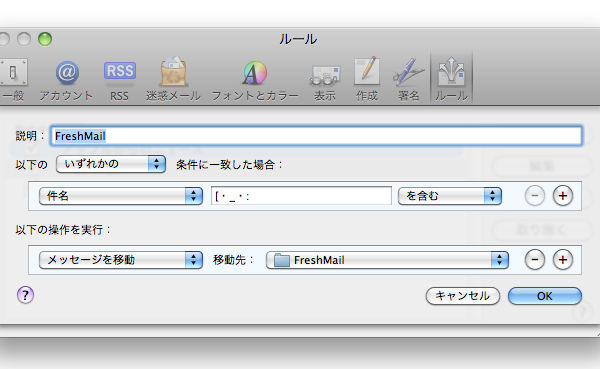

FreshMailについて
FreshMailとはメンバー全員がメル友であり、メールという最もベーシックなインターネットツールを用いて、日々の情報を共有することが目的。世界最強のインテリジェンス集団を目指します。
参加方法
下記メールアドレスに空メールを送信し、自動返送されたメールから入力フォームに飛んで簡単な自己紹介を添えて応募下さい。join-fnd.MUFA@ml.freeml.com（自動応対となります。)
はじめに
参加完了後、管理画面にログインし、まずは自分のプロフィール、プロフィール写真を登録してください。
書ける範囲で結構ですが「あなただれ？」って状態よりも、その人の「人となり」がわかったほうが受け手側も情報の理解度が深まります。
また、何か困ったときや人材を捜しているときなどにメンバー同士ゆるく繋ることによりSNSとしての機能も果たします。
どうぞご協力ください。
使い方
あなたが持っている情報をメール送信することから始まります。
" fnd@freeml.com " 宛に送信するとメンバー全員に配信される仕組みです。
- タイトル
- →シンプルで明確に。メールの内容がズバリわかるように
- 書き出し
- →本文の書き出しは、必ず自分の名前から。例）ハイロックです。
- 本文
- →記事の内容は誰にでもわかるように。リンクや写真をつけて工夫する。
- 確認
- →送信ボタンを押す前にもう一度内容を確認してださい。
- 返信
- →良い情報には返信してください。その返信メールもメンバー全員に配信されます。
FreshMailタグ一覧
日々蓄積されていくフレッシュメールを検索できるようにタグ付けを推奨しています。
あくまでも推奨で強制ではありませんので、出来る人はやってください。
以下、オフィシャルに認定したタグ一覧です。
- アート #art
- ファッション #fashion
- ムービー・YouTube #movie
- 写真 #photo
- イベント #event
- 食べ物・飲み物 #food
- 音楽・音 #music
- 物・アイテム #item
- 本 #book
- 健康 #health
- 家具 #furniture
- 建築 #architecture
- 技術 #technology
- ウェブページ #web
- その他 #other
- 運営からの連絡 #information
2011.07.25 update
FreshMailの基本概念
FreshMailの基本概念として「受信者 ＜ 送信者」送信者は受信者より偉い。
情報送信者は小さな情報でも受信者に遠慮せずに送信する。
メールを受け取る側がフィルタをかけるなり、専用の受信メアドを登録するなりの工夫をすればいい。
FreshMailは、メルマガではありませんので受け身にならないよう楽しんでください。
全員が編集者であり、全員が読者であります。
今、目にした情報、あなたの頭の中に眠る情報をメンバーでシェアしましょう。
受け手側の工夫
FreshMailは1日に何十通ものメールが矢のように降り注ぎます。
ですから、受け手側に少しの工夫が必要です。
例えばマック標準のMailを使用している場合はメール環境設定の「ルール」の設定にて、
件名でFreshMailから来るメールを振りわけることができます。
そうすれば仕事のメールの邪魔をすることはありません。
メール特有のプッシュの恩恵を授かり情報時代のスピード感をお楽しみください。

ゆるくたのしむコツ
- 1つ、全部のメールを読もうとしない
- 1つ、メールタイトルにピンと来なければ即削除
- 1つ、中身の文面が雑だったり、読みづらかったら即削除
- 1つ、このユーザーは自分にあわないと思えば以後読まない
- 1つ、あとで読もうとしない、今読みたくなければ即削除
逆に言えば上記のようにならないように情報発信者は工夫することが必要である。
自分にとって必要ない情報はどんどん捨てましょう。
必要ならまたやってくるし、重要な情報には必ずレスが付くので何度でもやってきます。
友達を誘いたい場合は下記宛先に紹介者名と簡単な自己紹介を添えてメールを送信させてください。
著しくマナーの悪い人、情報レベルの低い人、情報を発信しない人、プロフィール登録のない人は管理人の独断でアカウント削除となりますので予めご了承ください。